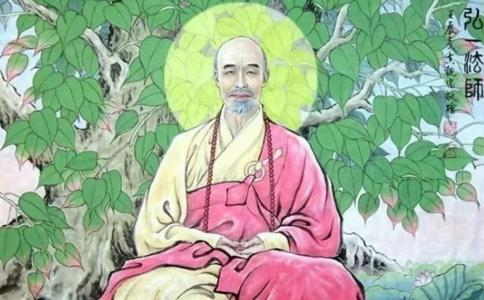

对历史上的高僧，人们关注的是他们的佛学修为，但对
郁达夫说，杭州的特产有两样，一是夏天的蚊子，一是庙里的和尚。据郁达夫在西湖边上的观察，每隔五分钟，就可以看到“缫衣秃顶的
蚊子多容易理解，而寺庙究竟有多少呢？有人夸张地估计，民国时期，杭州的寺庙多达两千多所，而西湖更是寺院的
据说，南宋之前的西湖荒凉，人稀，却是和尚的福地。然后，香客来了，文人也开始与和尚交游。再然后，西湖就成了游人如织的景点。
尽管庙宇已经荡然无存，但说到虎跑寺，人们还会隐隐约约知道这是座名刹。事实上，它是西湖边上的大寺之一，高僧辈出，但能为普通人熟记的高僧却只有两位：圆寂在此的济公，还有在此剃度的弘一法师。
佛事鼎盛的杭州，有幸接纳了弘一的剃度，但这一剃度，却引发了千古争议，弘一为什么弃荣华、妻子如弊履，盛年出家？对此，人们提出了破产说、遁世说、幻灭说、政界失意说，还有弘一学生
其实，诸如破产、遁世、幻灭等原因，只能算是浮在表层的影响因素而异，而深层的原因，还在于他的儒者身份。
“男儿若论收场好，不是将军也断头。”年轻的李叔同意气风发，也希望投身革命，先是追随康梁，而当辛亥革命胜利的时候，也欢欣鼓舞：“双手裂开鼷鼠胆，寸金铸出民权脑。算此生，不负是男儿，头颅好。”
1911年，他家的产业遭受了两次致命的打击，原因是辛亥革命引起的票号倒闭，这使得李家的百万资产荡然无存。在这样的情况下，李叔同对辛亥革命还是没有丝毫怨怼，只是发泄着河山光复的喜悦。
破产说和挫折说都认为，李叔同在家族企业的危机后
1917年，赴日学习音乐的刘质平经济拮据，向李叔同求援。此时的李叔同基本上靠薪金度日，因此，他从工资的一百零五元薪水中抽出二十元，寄往日本，资助过程直到刘质平学成归国。可见，工资度日已经绰绰有余，生活并不拮据。而从刘质平的角度看，如果不是知道老师有钱，他也是不会开口求援的。
事实上，李叔同的出家，还在于他的儒者身份，他有建功立业的念头，现实却丑恶卑劣，因此，又激发了他文化血液中的归隐思想。
辛亥革命结束后，军阀之间还在混战，南北之间更是吵得不亦乐乎，而许多士人谄媚逢迎。民国初年的气氛并没有想象中的美好，民主被空置，民生仍然凋敝，列强依然环伺……
儒家文化有“用行舍藏”的原则，李叔同在革命后期的幻灭中，就是遵从了这样的古训，所谓的“天下有道则现，无道则隐”。现实的政治和社会生活是丑陋的，读书人看不破，但他们又是坚定的理性主义者，所以，士人可以在革命潮流中放声呐喊，一旦转到丑陋的政治运作，他们就会手足无措，产生“百无一用是书生”的感慨时。这个时候，归隐，就是一条不错的选择。
在中国传统士人的视野里，隐，就意味着依佛傍老。而李叔同首先选择的，还是道家的归隐途径。所以，李叔同这位归国后常研读宋明性理之学的循循儒者，“后来忽然信了道教，案上常披着道教的经书。自己关起房来研究道学。”
他学道学不是好玩，而是玩真的。他开始试验断食，希望通过“不食
这个时候，他改名李婴，兴起了怀旧、倒退回婴儿期的念头。“茅屋之椽，老梅一树，树底迷藏捉”又成了诗歌的主题。
对道家文化的推崇，是他决定归隐时的第一次选择，而他最终选择了
从清末直至抗战前夕，浙江文化领域的名士们形成两个圈子。第一个圈子以鲁迅为代表，还有秋瑾、徐锡麟、陶成章、蔡元培、章太炎，致力革命，壮怀激烈，是儒者中的革命家。而第二个圈子则以马一浮为精神领袖，其中有李叔同、夏丐尊、经亨颐，以及属于晚辈的丰子恺、刘质平，是儒生中的隐逸者。
马一浮在五四运动前后就过着隐居的生活，并在杭州一带宣扬佛学。在现代学者看来，马一浮却是“新儒学”的典型代表，西方文化、佛学以及道家思想，都与儒学相会贯通，成为新儒学一代大师。
据丰子恺的回忆，李叔同
学佛之后，李叔同经常在虎跑寺等寺院留连，有一次还在那边住了半个多月，自己觉得十分愉快，也和大和尚们一起吃菜蔬。回到学校的时候，也就是1917年的下半年，他开始吃素。
到冬天的时候，他请了许多经，如《
1918年正月，他在虎跑寺拜一位老和尚为师。农历二月初五日是李叔同母亲的忌日，他提前两天到虎跑诵了三天的《
这次，他开始穿出家人的衣裳，准备第二年剃度。夏丏尊看他没有出家，却穿出家人的衣裳，就说：“既住在寺里面，并且穿了出家人的衣裳，而不即出家，那是没有什么意思的，所以还是赶紧剃度好。”李叔同最终在1918年农历七月十三日剃度，落发为僧。
马一浮提倡
号称章疯子，敢骂光绪皇帝为“小丑”的章太炎读
李叔同不同，除了作为儒者内心的
李叔同的父亲晚年
每逢这种场合，他都会与年纪相仿的侄儿李圣章扮和尚，用床罩做僧衣，口诵佛号。而年级稍大的时候，更是自封“大和尚”。
家里一位姓刘乳母，也常常教李叔同背诵《名贤集》中的格言诗，如“高头白马万两金，不是亲来强求亲。一朝马死黄金尽，亲者如同陌路人”。荣华尽头是悲哀的意思，也就从这个时候开始了，所以，13岁的李叔同就能写出“人生犹似西山月，富贵终如草上霜”的诗句，佛意十足。用佛学的眼光看，他已经具备通达佛门的“
和他相对照的是，鲁迅的童年也有类似的经历，他曾经拜过一个和尚为师，并取法名为“长庚”。不过，他接触到的是佛经中的
此外，母亲以及他的日籍妻子也是心头之痛。李叔同奉母至孝，却对母亲有强烈的负罪感。母亲24岁守寡，44岁早逝，用屈辱、痛苦的小妾生活换来了他的快乐童年。李叔同由此对一夫多妻没有好感，他的原配夫人是芥园大街俞家茶庄的小姐，结婚的时候，他18岁，整个
因此，他难以面对九泉之下的母亲，也同样难以面对异国他乡的弱女子。
所以，遁世说和幻灭说的某些方面是合理的。不过，他的遁世，是为了化解自身内心的道德煎熬，他的幻灭，是对王后将相方面事功的幻灭。但他没有逃避自己的责任，也没有对一切说空。他依旧关注自己的儿子的成长，也终身不敢忘记母亲的养育，而当国难当头的时候，佛门高僧发狮子吼，誓以佛门残躯“殉教”救国。
不过，尽管他从儒家的教条出发出了家，当身处佛门的时候，他还是成了真正的佛教徒。谭嗣同说：“佛教精微者极精微，诞谬者极诞谬。”上至慈禧太后、恭亲王，下至深山贫妇、市井贩夫，用佛教来
除了佛教精深的义理，弘一法师对戒律也很有兴趣，他选择的是戒律最严的律宗。之所以这样，或许是他内心的结依旧不能完全释然。母亲，异国妻子，还有家国之事，都难让人心安。
他的守戒，让人瞠目。以不
纵观弘一法师的出家，首先是在儒学的指引下，开始寻求隐逸的生活，而后，佛教拓展了儒学资源中的隐逸方式，让他过着一种完全苦头陀的修行生活，苦其心志，而修其精神。幻灭，挫折，失意，都是幻像。
李叔同出家拒见妻子 妻子跪求相见无果三十七岁时，李叔同与佛结缘，思索良久，最终决定出家。他将自己多年来视若珍宝的书籍、字画、折扇、金表都赠送给了友人，就连衣服也一件不留。同事、朋友纷纷相劝，他都丝毫不为所动，携带了几件布衣和日常用品就头也不回地去了杭州虎跑寺。
去了之后，他立即换上僧人的衣服，屋子自己动手打扫，支个木板就当床，别人想帮忙，他一律不许。而且只吃
为了避免家人阻挠，他事先甚至没有跟妻子沟通。直到他进了寺院，妻子才得知消息，到寺院寻找。可是，无论妻子在房门口如何苦苦哀求，他都避而不见，妻子索性跪在那里不走。见此情景，连同去的人都忍不住落泪，李叔同却只是托人捎了一句：“当作我患虎疫死，不必再念。”
虽然已经出家，但家人并没有忘记他，还是偶尔会写家书来。每逢收到家书，别人都拆开细看，唏嘘不已，李叔同却一眼也不看，托人在信封后面写：“该人业已他往，均原封退还。”别人觉得很奇怪，家书看一下又没事，只要不回就是了，为什么非得退还呢？李叔同答：“既然出家，就当自己死了。如果拆阅，见家中有喜庆事，定会开心，若有不祥事，易引挂怀，还是退了好。”
为了避免亲人朋友打扰，他的禅房上贴着四个字：“虽存若殁”，将所有探访的脚步阻止在门外，真是绝情到极致。
丰子恺说，李叔同是一个“做什么像什么”的人，无论诗词音乐，还是